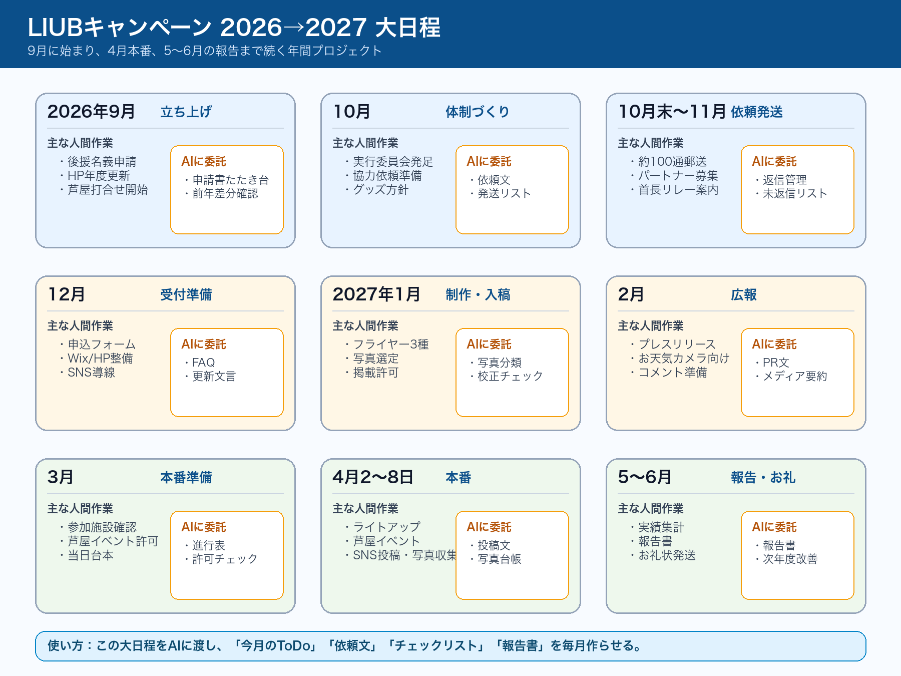
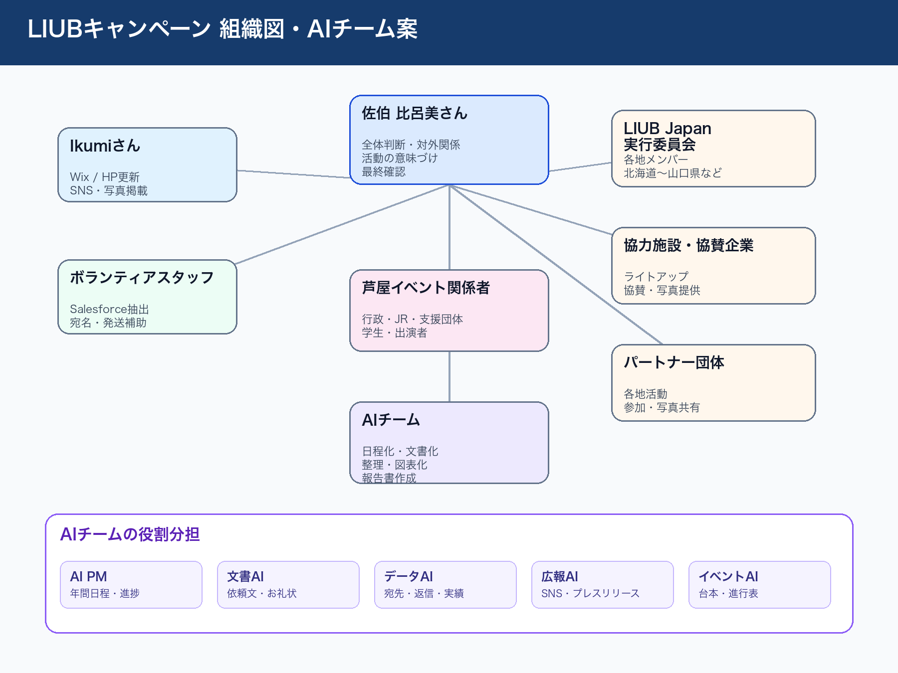

LIUBキャンペーンは、4月2日だけでなく、9月から翌年6月まで続くプロジェクト
比呂美さんの追加録音「NPO法人あっとオーティズム LIUBキャンペーン年間の動き」だけをもとに、年間日程・組織・AI委託タスクを整理しました。
このPodcastはLIUB追加録音だけをソースにして再生成しました。第2回前半のTypeless／ChatGPT／Wix／TimeTree／ファイル探しの話は含めていません。
LIUBキャンペーン 2026→2027 大日程

人間チームとAIチームの組織図

月別の大きな流れ
| 時期 | 主な動き | AIに任せられること |
|---|---|---|
| 9月 | 後援名義申請、HP申込フォーム更新、芦屋イベント打ち合わせ開始 | 前年との差分確認、申請書たたき台、ToDo化 |
| 10月 | LIUB Japan実行委員会、協力施設・協賛企業への依頼準備 | 依頼文、送付先リスト、返信管理表 |
| 10月末〜11月 | 約100通の依頼発送、パートナー募集 | 発送チェックリスト、未返信リスト、メール文面 |
| 12月 | 申込開始に向けたHP・フォーム整備 | Wix文言、FAQ、投稿テンプレ |
| 1月 | フライヤー制作・写真選定・入稿 | 写真分類、掲載許可リスト、校正チェック |
| 2〜3月 | プレスリリース、本番準備、当日台本 | 広報文、進行表、確認リスト |
| 4月2日〜8日 | 世界自閉症啓発デー／発達障害啓発週間 | SNS投稿文、写真整理、実施状況表 |
| 5〜6月 | 報告書、お礼状、実績集計 | 報告書たたき台、お礼状、次年度改善メモ |
AIチームに最初に任せる仕事
- 年間作業を9月〜6月の締切つきToDoにする
- 前年の依頼文を2027年版に直す
- 宛先一覧を郵送・メール・返信あり・未返信に分ける
- Wix掲載文とSNS投稿文を作る
- 芦屋イベントの台本と行政確認リストを作る
- 実績から報告書とお礼状を作る
NotebookLM生成スライド
NotebookLM生成版は保全用です。日本語表記の安定版として、上の大日程・組織図PNGを優先して見てください。